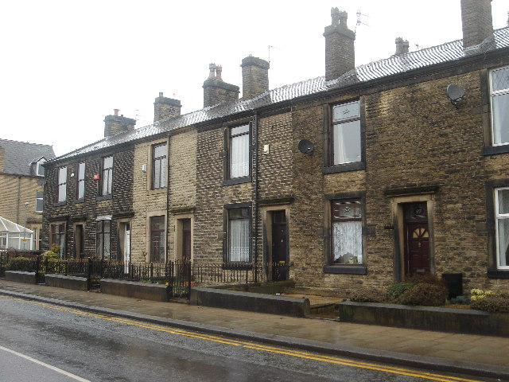

We are collecting information about organisations involved with housing decarbonisation (or 'retrofit'), in the broadest sense — including those undertaking product design, housing provision, policy development, research, health, community action, and everything else relating to retrofit. If your organisation is involved with how retrofit is done, or its effects, we would like to hear from you.
The Retrofit Directory is publicly available and searchable, helping organisations to identify one another, connect and collaborate.
We will also use the Directory to analyse the stakeholder landscape of the UK's retrofit system, to inform policy and sector developments.
Why is this needed? Reducing carbon emissions from UK homes is essential if the country is to meet its climate targets. Improving existing homes involves many different policies and areas of everyday life, so progress depends on a wide range of people and organisations working together. The Retrofit Directory will help by making it easier to find organisations with the right skills and expertise, supporting better communication and collaboration across the sector.
It will take around 10 minutes to complete the survey.